Ranchão do Zé Carlão
ALMOÇO
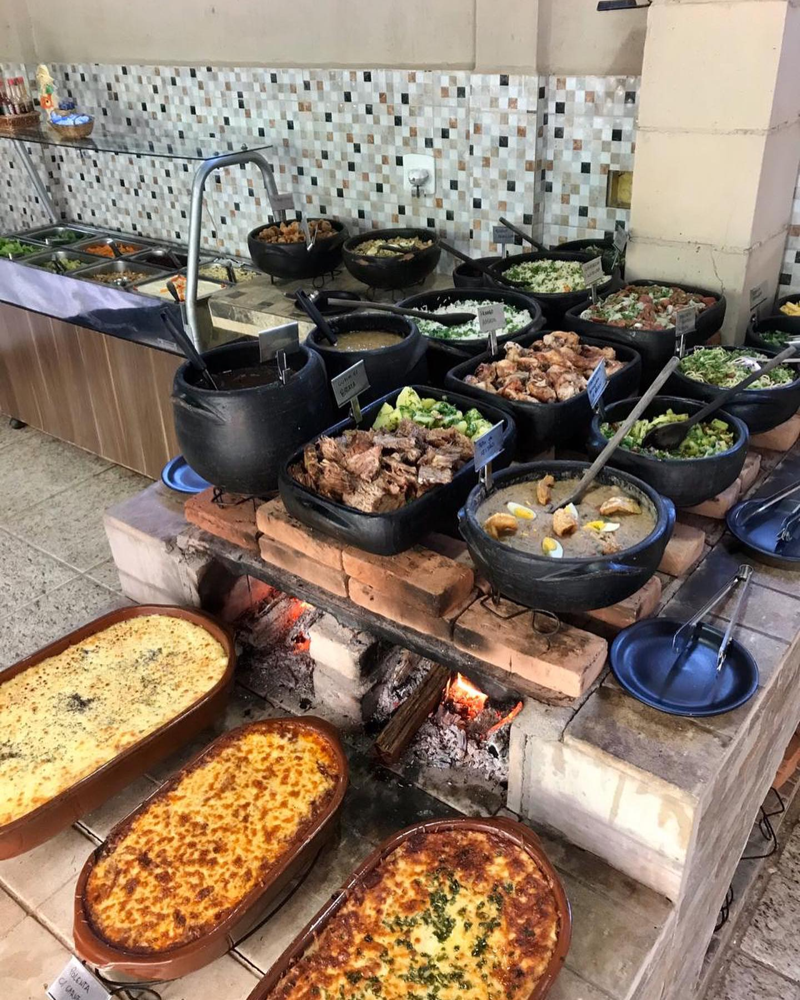
Almoço delicioso
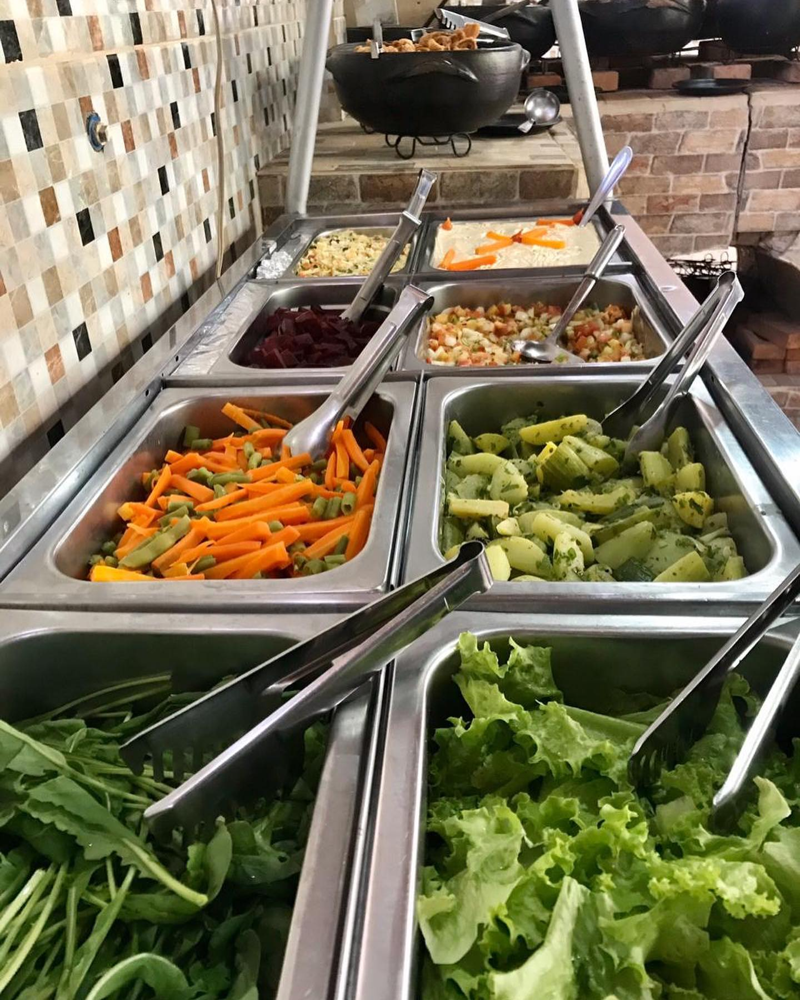
Acompanhamentos
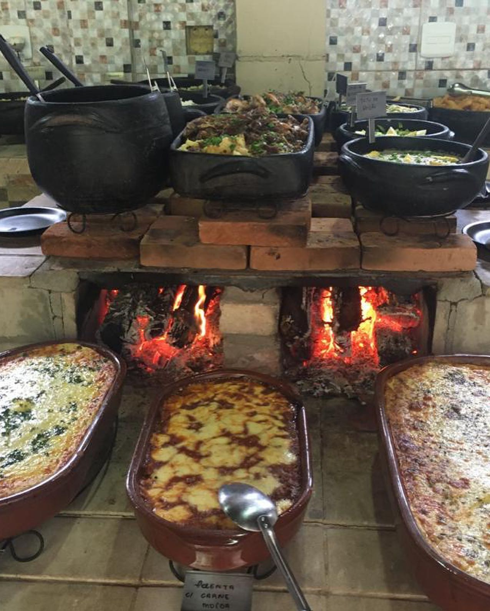
Escondidinho de carne
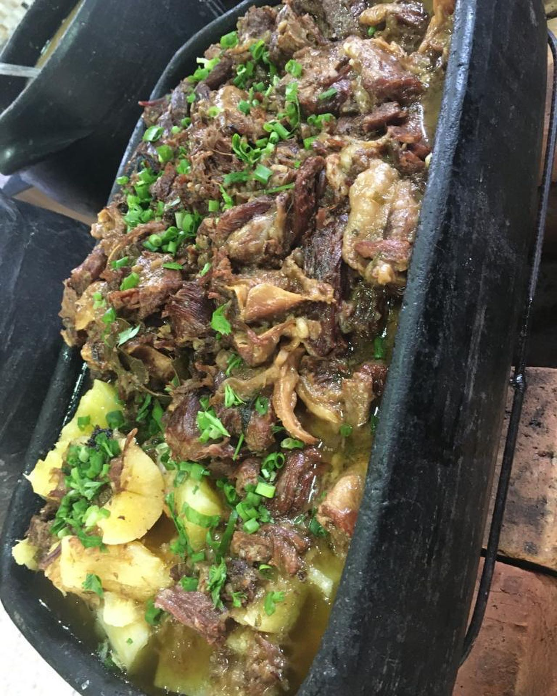
Carnes bem preparadas
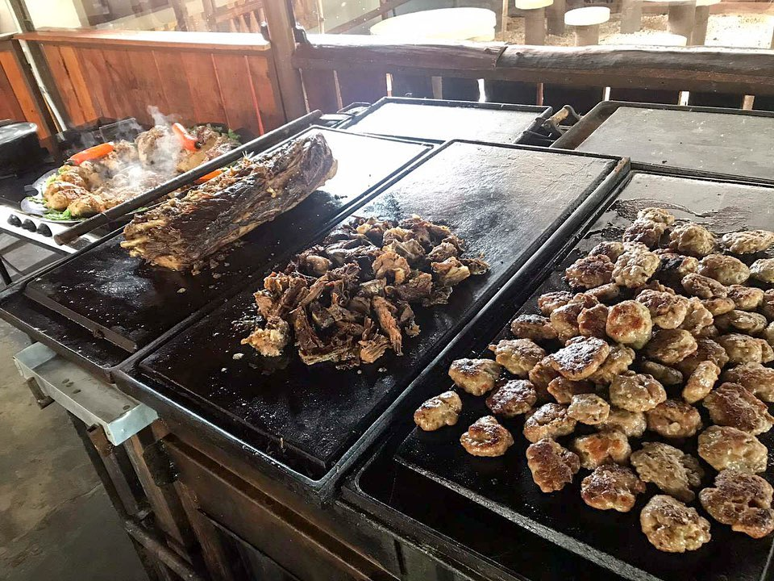
Carnes de dar agua na boca
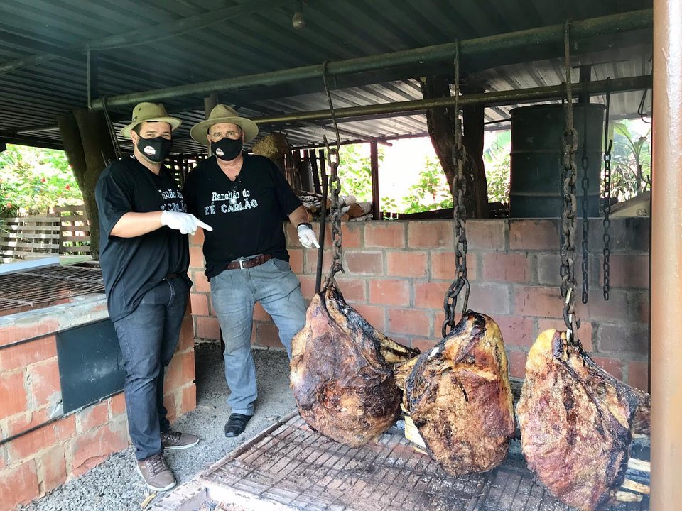
Com possibilidade de ver tudo sendo preparado
BEBIDAS
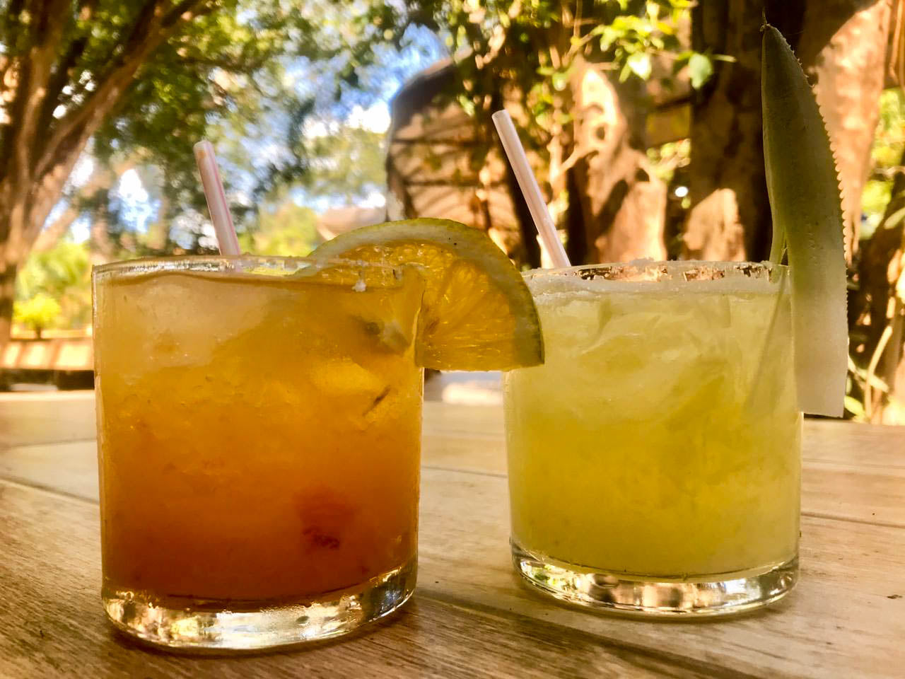
Bebidas
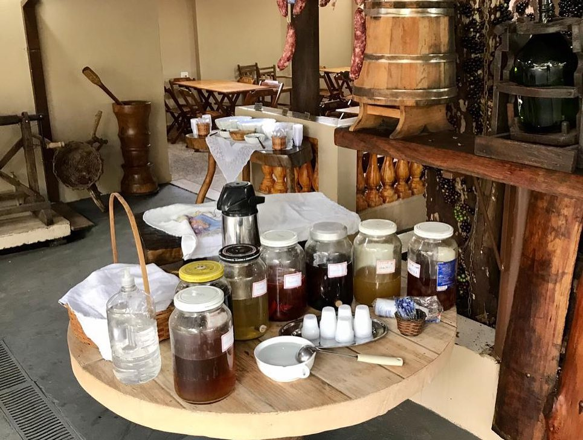
Cachaças
AMBIENTE AGRADÁVEL
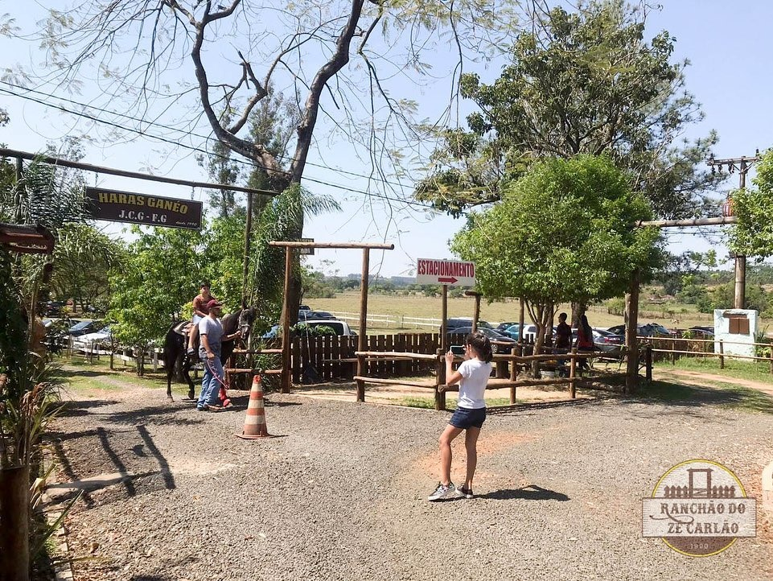
Haras
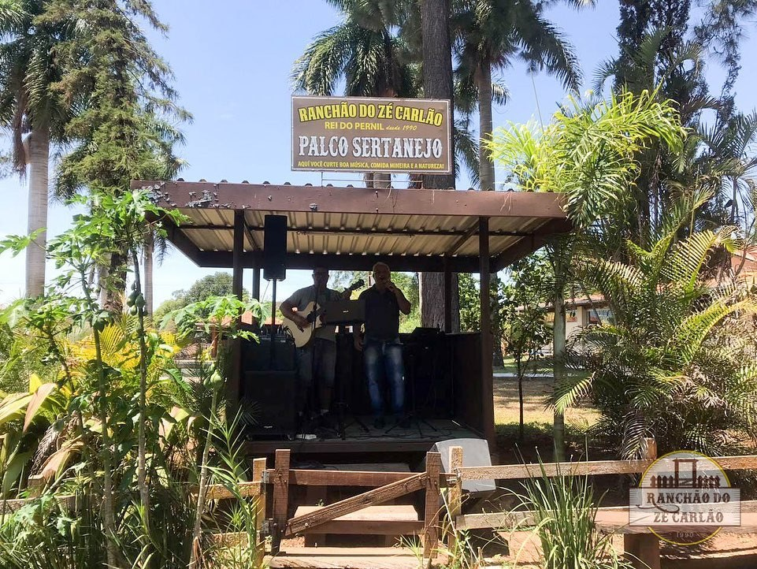
Som ao vivo
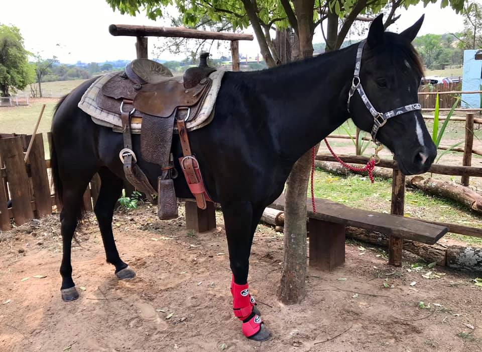
Passeio a cavalo
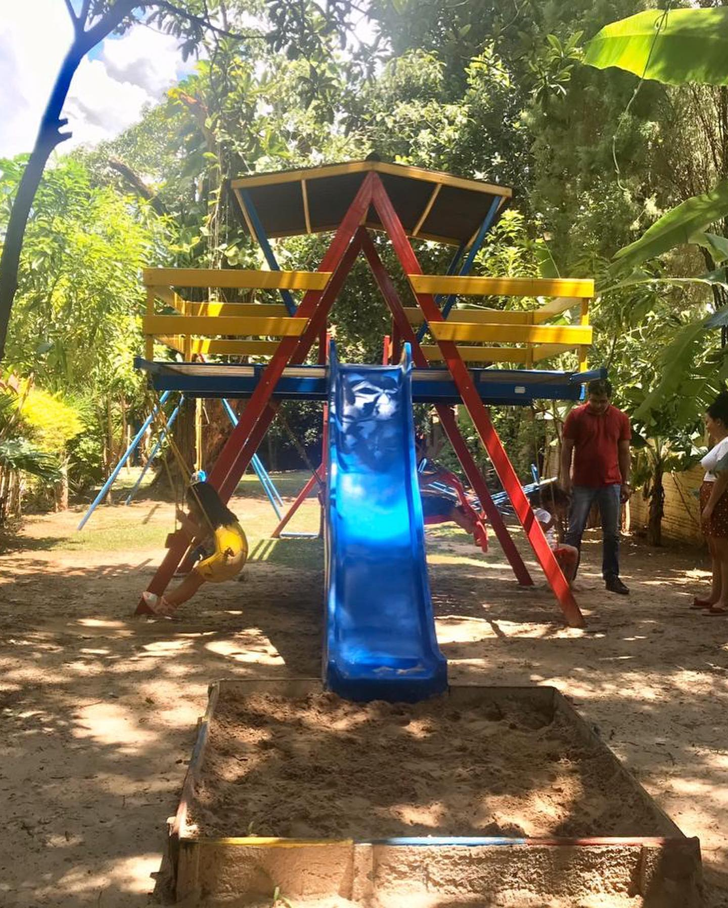
Diversão para crianças
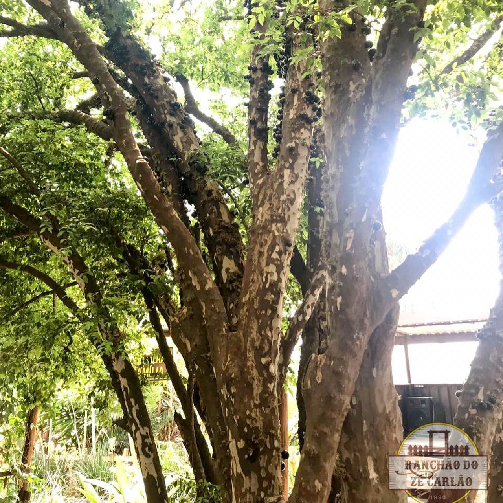
Arvores frutíferas